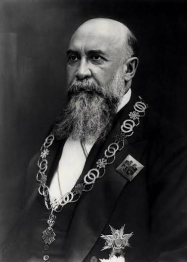

Libermed
Libermed este o platformă cu grile de biologie și chimie pentru pregătirea examenelor de admitere la facultățile de medicină din România. Este complet gratuită.
Începe grilele
Nicolae Iorga 1871-1940
Școala cea mai bună e aceea în care înveți înainte de toate a învăța.